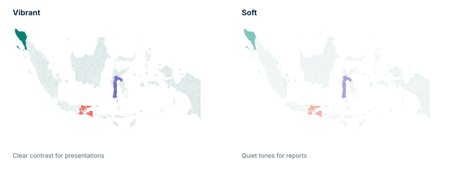

See patterns instantly
Color makes differences and clusters easier to notice.
Spot key locations, compare performance, and communicate insights with clarity.

Works in your browserNo install required.
No account requiredOpen a workspace when you are ready.
Your spreadsheet stays on your deviceNo uploads or analytics.
Indonesia region data with source detailsRead the method
Color makes differences and clusters easier to notice.
Use a focused map to support a report or presentation.
Bring priority places into view without GIS complexity.
Work with the Indonesia region geometry and names documented by NusaCanvas.

Compare places using your own sales categories or values.
Show candidate regions while a plan is being discussed.
Mark service areas, hubs, or places needing attention.
Present campaign focus areas with consistent colors.
Pick provinces, cities, or regencies.
Set colors, labels, and a legend.
Review the result and adjust details.
Download the map for your work.
Create your first map in minutes.